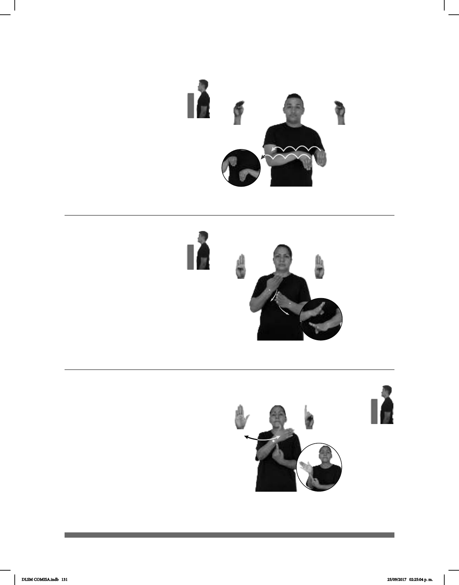

131
(B-P 61)
dm-ÁNGELA BALLET NIÑO+MUJER pro-ELLA GUSTAR
Ángela le gusta el ballet desde niña.
Seña: SB
MD y MB B-P.4
MD y MB palmas hacia
adentro.
MD y MB a la altura del
pecho.
La MD y la MB
simulan varios saltos hacia la derecha
alternadamente.
Simula las puntas de
ballet.
sust. m. Danza clásica de
conjunto representada sobre un
escenario.
(B-P 62)
AYER BANCO
izquierda
dm-ROCÍO DINERO RETIRAR
Rocío retiró dinero ayer en el banco.
1
2
(B-P 63)
3
BANDERA MEXICANA TENER TRES COLORES
La bandera mexicana tiene tres colores.
Seña: SB
MD y MB B-P.1
MD y MB a la altura del
pecho.
MD la palma inicia hacia arriba
y termina hacia la izquierda. MB la palma
inicia hacia la derecha y termina hacia abajo.
Los antebrazos de MD y MB
giran y cambian la orientación de las palmas.
sust. m. Institución que
realiza las múltiples operaciones comerciales
a que da lugar el dinero y los títulos que lo
representan, como inversiones, créditos,
ahorros, pagos, etc.
Seña: SB
MD B-P.2, MB 1.1
MD palma hacia la izquierda.
MB palma hacia adentro.
A la altura del pecho; muñeca de
MD sobre índice de MB.
La MD se mueve formando un
arco de izquierda a derecha repetidamente.
La seña simula una bande-
ra en movimiento.
1. sust. f. Tela de forma
comúnmente rectangular, que se asegura por
uno de sus lados a un asta o a una driza y se
emplea como enseña o señal de una nación,
una ciudad o una institución. 2. Estación
del STC Metro de las líneas 1, 5, 9 y A. 3.
Estación del STC Metro de la línea 9.
DLSM COMISA.indb 131 25/09/2017 02:25:04 p. m.